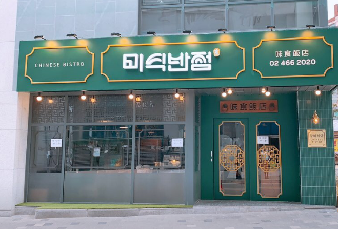
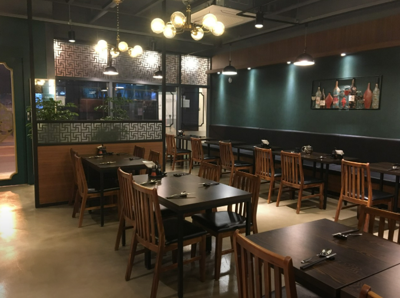
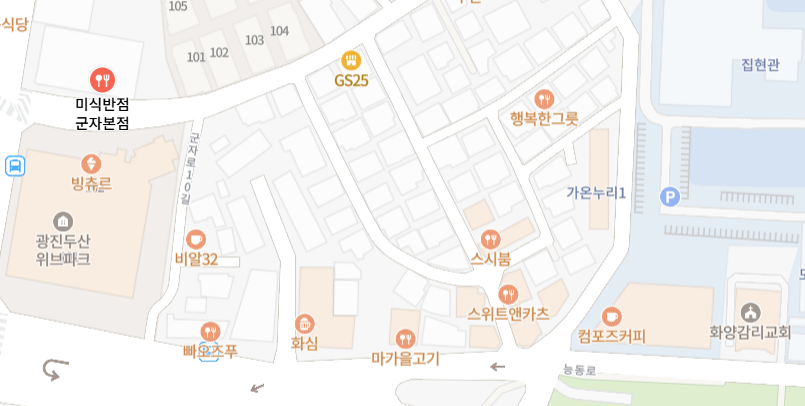
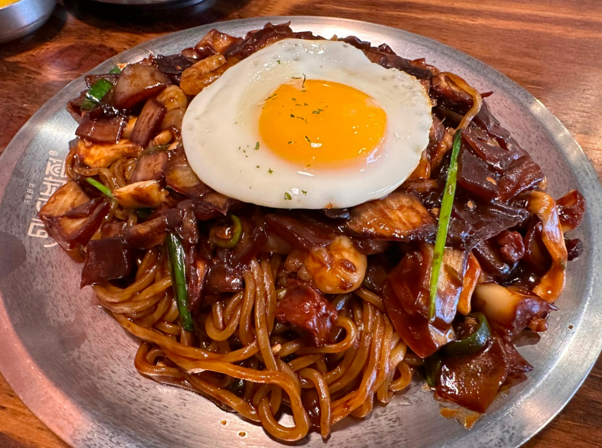
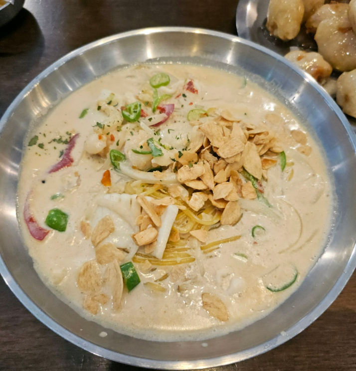
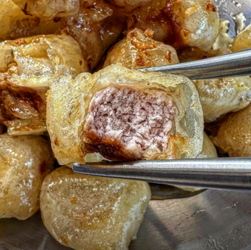

| 해물볶음짜장 | 크림짬뽕 | 탕후루탕수육 | |||
|---|---|---|---|---|---|
|

|
무난하게 먹기 좋은 짜장면입니다 저는 맛있었어요... |

|
미식반점 대표 메뉴! 크림이지만 느끼하지 않고 맛있어요 |

|
탕후루처럼 동글동글한 탕수육 바삭바삭하고 한 입에 먹기 좋아요 |
| 맛 | 거리 | 청결 | 식곤증 | 재방문의사 | 한줄평 | |
|---|---|---|---|---|---|---|
| 팀원1 | 4.3 | 2.5 | 4.4 | 5 | 4.3 | 반죽이 정말 독특해서 탕후루처럼 탕 하고 터지는 바삭합입니다! |
| 팀원2 | 4 | 5 | 5 | 4 | 4.5 | 짬뽕이 얼큰하고 불맛이 강하여 먹는 재미가 있는 맛입니다! |
| 팀원3 | 5 | 4 | 5 | 5 | 5 | 후라이 덮은 짜장면이 감칠맛있고 좋았습니다! |